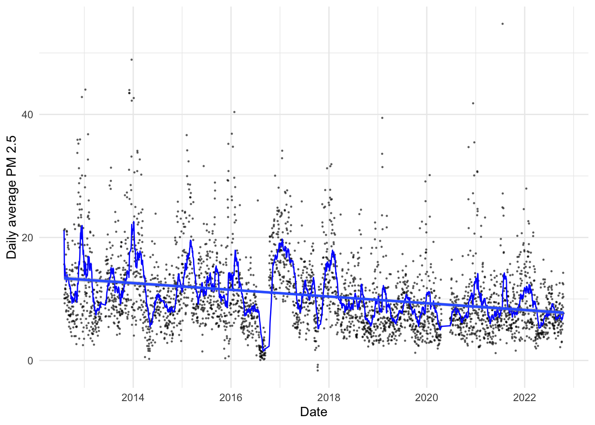
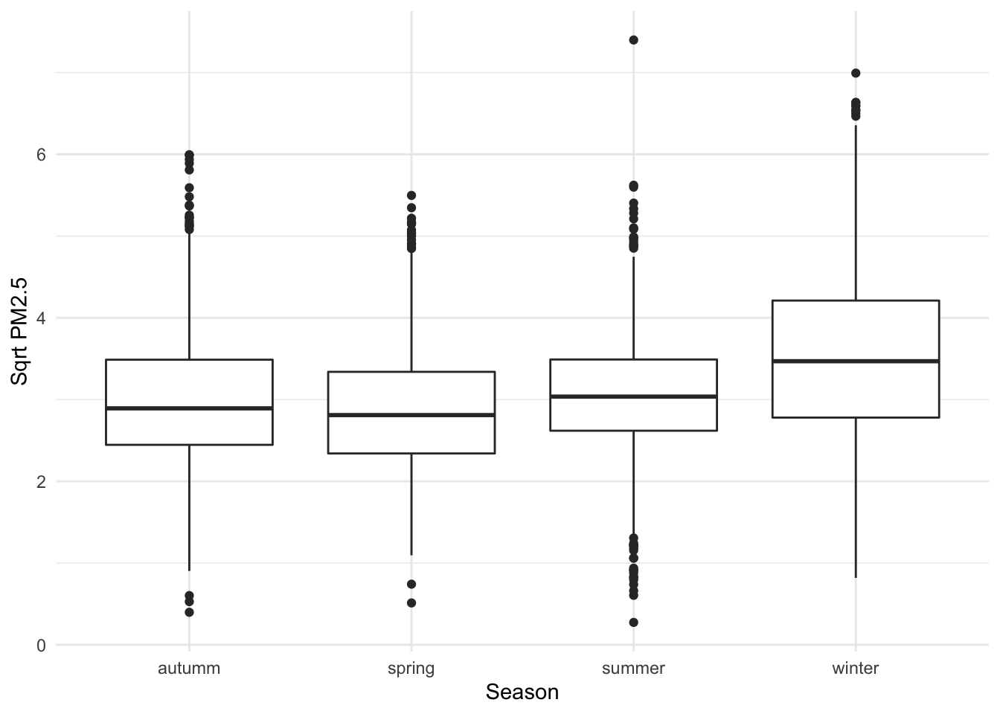
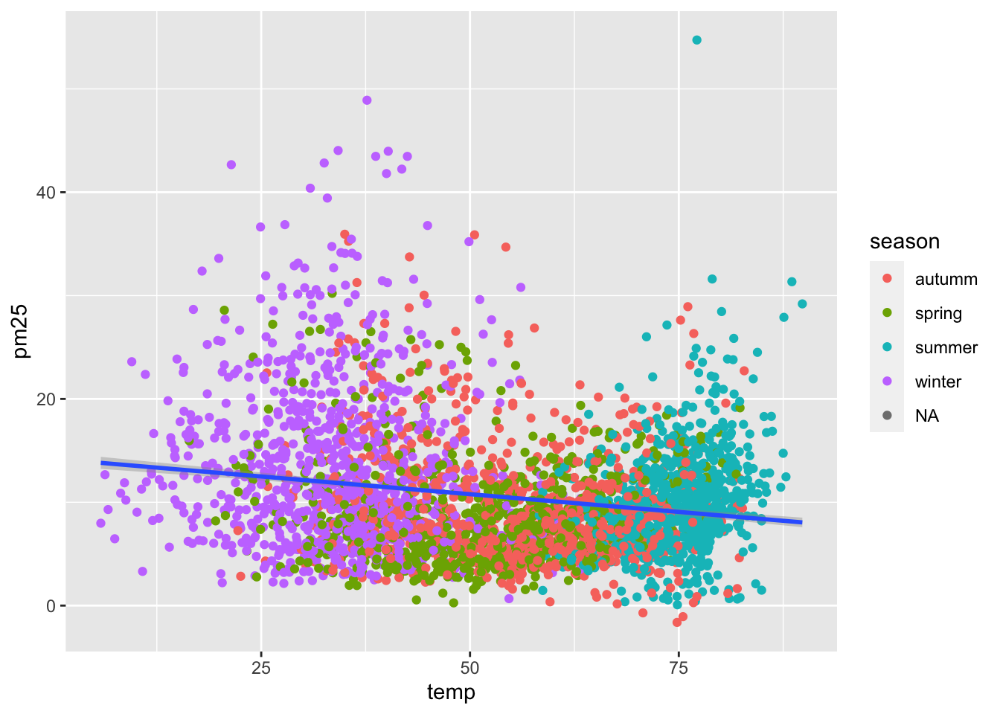
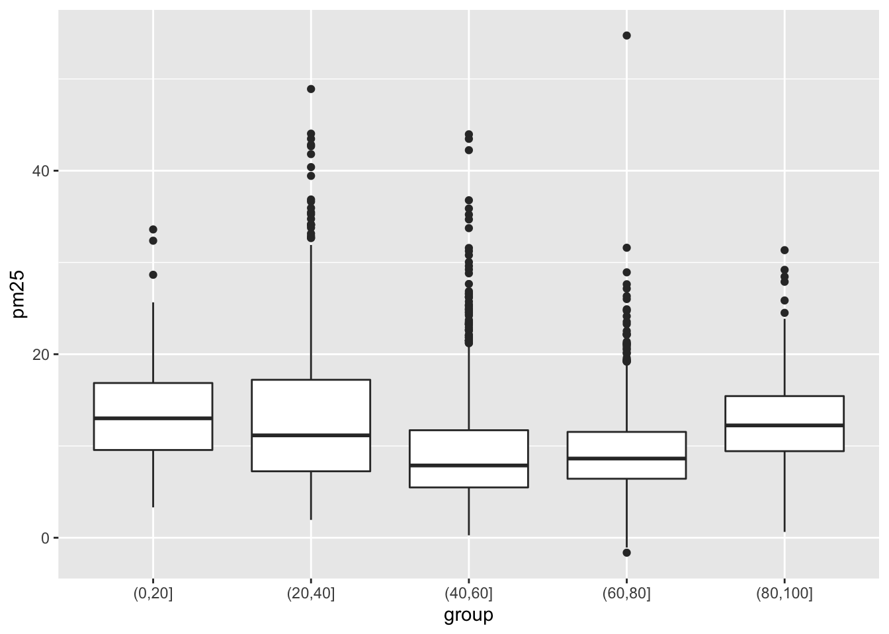

# Install and load required packages
#install.packages('pacman')
pacman::p_load(hydroTSM,ggplot2,readr,stringr,tidyr,readr,dplyr,zoo)
# Download PA DEP wind, temperature, and PM2.5 data
url1 <- 'https://www.dropbox.com/s/djsrnlou8gfd9h6/pa_dep_wind.csv?dl=1'
url2 <- 'https://www.dropbox.com/s/f60llaltcclen47/pa_dep_pm25.csv?dl=1'
url3 <- 'https://www.dropbox.com/s/r3y0gmkkib7fas7/pa_dep_temp.csv?dl=1'
wind <- read_csv(url1)
pm25 <- read_csv(url2)
temp <- read_csv(url3)Long-term trends?
Questions
How does daily PM2.5 vary over time in the Lehigh Valley?
How does daily PM2.5 vary by season? Does PM2.5 tend to be higher or lower in particular seasons.
How does daily PM2.5 relate to significantly cold weather? For example, is there more PM2.5 on days when it is especially cold?
PA DEP PM2.5 Data
Load data and packages:
Clean and pivot data:
# Create date variable for pm2.5
pm25 <- pm25 %>%
select(-Avg,-Min,-Max,-Count) %>%
relocate(Month) %>%
mutate(Year=str_sub(Month,-4),
Month=str_sub(Month,1,nchar(Month)-5),
Date=as.Date(paste(Year,Month,Day,sep='-'))) %>%
relocate(Date) %>%
relocate(Year, .after=Day)
# Pivot from wide to long format
pm25 <- pm25 %>%
pivot_longer(cols=5:28,
names_to='Hour',
values_to='pm25') %>%
mutate(date_time=as.POSIXct(paste(Date,Hour),format="%Y-%m-%d %H",tz="UTC")) %>%
relocate(date_time)Fill in missing data and add seasons:
# Let's fill in missing hourly data with the monthly average each year
pm25 <- pm25 %>%
group_by(Year,Month,Hour) %>%
mutate(pm25=case_when(
is.na(pm25) ~ mean(pm25,na.rm=TRUE),
TRUE ~ pm25
)) %>%
mutate(pm25=round(pm25,1)) %>%
ungroup()
# Now let's add a season variable
pm25 <- pm25 %>%
mutate(season=time2season(Date, out.fmt = "seasons"))Question 1
- How does daily PM2.5 vary over time in the Lehigh Valley?
pm25 %>%
drop_na() %>%
group_by(as.Date(date_time)) %>%
summarize(pm25_daily=mean(pm25,na.rm=TRUE)) %>%
rename(date=1) %>%
ggplot(aes(x=date)) +
geom_point(aes(y=pm25_daily),alpha=0.5,size=0.25) +
#geom_line(aes(y=pm25)) +
geom_line(aes(y=rollapplyr(pm25_daily,30,mean,partial=TRUE)),color='blue') +
geom_smooth(aes(y=pm25_daily), method='lm') +
theme_minimal() +
labs(x='Date',
y='Daily average PM 2.5')
Question 2
- How does daily PM2.5 vary by season? Does PM2.5 tend to be higher or lower in particular seasons.
pm25 %>%
group_by(Date,season) %>%
summarize(pm25=mean(pm25,na.rm=TRUE)) %>%
ggplot(aes(season,sqrt(pm25))) +
geom_boxplot() +
theme_minimal() +
labs(x='Season',
y='Sqrt PM2.5')
Temperature
# Create date variable for pm2.5
temp <- temp %>%
dplyr::select(-Avg,-Min,-Max,-Hrs,-X1) %>%
relocate(Month) %>%
mutate(Year=str_sub(Month,-4),
Month=str_sub(Month,1,nchar(Month)-5),
Date=as.Date(paste(Year,Month,Day,sep='-'))) %>%
relocate(Date) %>%
relocate(Year, .after=Day) %>%
drop_na(Date)
# Pivot from wide to long format
temp <- temp %>%
pivot_longer(cols=5:28,
names_to='Hour',
values_to='temp') %>%
mutate(date_time=as.POSIXct(paste(Date,Hour),format="%Y-%m-%d %H",tz="UTC")) %>%
relocate(date_time)
# Join temperature date to pm2.5
temp <- temp %>%
select(date_time,temp) %>%
left_join(pm25, by='date_time')Question 3
- How does daily PM2.5 relate to significantly cold weather? For example, is there more PM2.5 on days when it is especially cold?
temp %>%
group_by(Date,season) %>%
summarize(temp=mean(temp,na.rm=TRUE),
pm25=mean(pm25,na.rm=TRUE)) %>%
ggplot() +
geom_point(aes(temp,pm25,color=season)) +
geom_smooth(aes(temp,pm25),method='lm')
We can also break the data into group:
temp %>%
group_by(Date,season) %>%
summarize(temp=mean(temp,na.rm=TRUE),
pm25=mean(pm25,na.rm=TRUE)) %>%
mutate(group=cut(temp,breaks=(seq(0,100,20)))) %>%
drop_na() %>%
ggplot() +
geom_boxplot(aes(group,pm25))